01权重要管，API 不管，中国给 AI 出口划了一条线
10 月 16 日，商务部、科技部发了一份公告，编号 2026 年第 48 号。
内容一句话能说完：拟修订《中国禁止出口限制出口技术目录》，新增人工智能、生物医药、光伏三个领域共 40 项关键技术，公开征求意见到 11 月 15 日。
先说个前提。真正值得读的是那条被很多人一眼扫过去的线。
这条线不在清单里，在商务部新闻发言人的答问里。原话是，判别一种「出海」属不属于技术出口管理，核心在于是否涉及限制类技术从境内向境外转移。
顺着这个标准，发言人给了明确结论。企业用限制类大模型对外提供 API 调用、App 和网页交互、SaaS 应用、本地端侧轻量化部署，这些都不属于技术出口管理范围。
权重要管，API 不管。就这么简单。
听着有点绕，其实一句话就说透了。同样一个模型，你把权重文件发给境外，管。你让境外的人来你的服务器上调用它，不管。
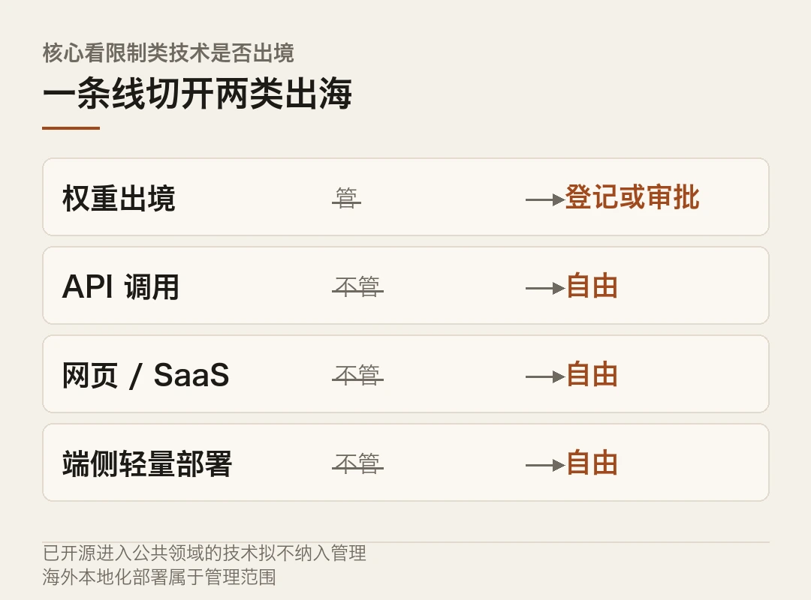
- 40 项拟增列技术里，人工智能占 23 项，覆盖大模型、智能体、算力集群、信息处理。
- 关键切割：管的是「权重和代码出境」，不是「服务出海」。API 调用、网页、SaaS、端侧部署都明确排除在外。
- 已经开源、发表论文进入公共领域的技术，拟不纳入管理。这条对国内开源模型的「软实力」路线，等于留了一扇门。
这份目录真正的落点，不是堵住中国 AI 出海。它把「技术本身」和「技术的使用权」拆成两件事，只对前者设闸。
一、先把清单摊开
40 项，分三块。人工智能 23 项，光伏 12 项，生物医药 5 项。
先说人工智能，这是重头。拟禁止出口的 14 项里，摆最前的是「人工智能驱动的恶意代码生成与变异技术」。官方定性很重，公告原文说它可能被用来攻击关键信息基础设施、国防军工、核心政务，或绕过国家安全防御体系。
拟限制出口的 26 项里，有「人工智能辅助漏洞挖掘技术」这类灰调技术。
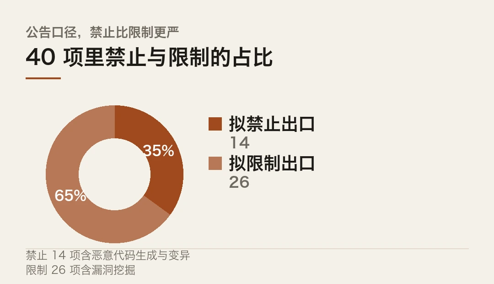
光伏那边是「单线产能不低于 3 万吨每年的多晶硅工程技术」这类硬指标。生物医药是细胞和基因治疗、小核酸药、病原微生物相关的工艺平台和靶点发现技术。
注意到没有，清单里塞的不只是「模型」。还有算力集群、芯片设计方法这类基础设施性的东西。23 项里，大模型只是其中一类。
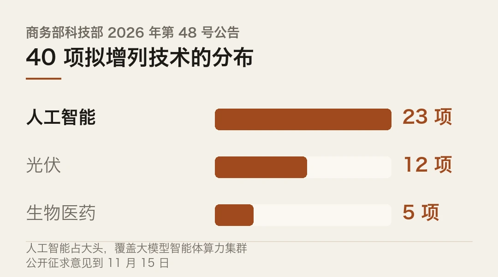
这也不奇怪。真到了要卡脖子的层面，权重只是皮，算力集群和设计方法才是骨。
二、管的是权重，不是服务
这一节是整份公告里最需要讲清的地方。
限制类大模型如果做海外本地化部署，就是把权重交到境外的机器上，这属于技术出口，要管。但只是对外提供 API 调用，让对方在境内跑好的模型上发请求，不属于出口管理范围。
同样排除在外的，还有 App 和网页交互、SaaS 应用、本地端侧轻量化部署。
这个切割的分量，要放到当下中国 AI 的处境里看。
过去两年，中国 AI 最大的成功是开放权重模型。据公开报道，DeepSeek、阿里、智谱这些团队，靠把权重免费放出来，在全球开发者里攒下了实打实的信任和份额。开放本身，一直是北京在 AI 上的一张软实力牌。
现在这张目录一出，最容易被误读成「要收回这张牌」。真有那么极端吗？公告用两个设计把误读堵住了。
第一，已通过开源、发表论文进入公共领域的技术，拟不纳入管理。已经放出去的，不追溯。
第二，人工智能类技术开源、在境外自建算力中心、赴境外流片、联合研发、参与国际标准制定这些情形，走自动许可。官方说法是「即报即出」。
所以，这张目录要管的，是未来还留在手里的前沿权重。已经送出去的，以及准备继续送的，都留了门。
三、一个必须讲清的边界
这里我得插一句，把话说到位。
这份公告的性质是征求意见稿，不是生效法规。11 月 15 日截止前，范围和指标都可能调整。现在拿它当「已经封了路」来解读，是错的。
但有个临时措施是当天就生效的，出口前登记。从公告发布之日起，到目录正式修订实施之前，出口附件所列技术前，要在商务部平台上登记。已经开始但还没完成的出口，也在登记范围内。
这一条是立刻生效的，不能当它没发生。
还有一处容易被放大的细节。公告里登记的情形，包括「境内技术的所有权人或实际控制人变更为境外主体」。这意味着不光卖技术要登记，股权层面让境外拿走控制权，也进了登记范围。
这是给「绕道出海」留的一道闸。
官方这一手，玩的是「快慢结合」。清单慢慢磨，登记先落地。
四、为什么是现在
这个时间点，很关键。
过去四年，AI 出口管制的叙事一直是单向的。华盛顿限制什么能进中国，先进芯片、设计软件、制造设备，全在美国这边设卡。
10 月 16 日这份公告，是北京在同一个游戏里，从供应链的另一头砌起了一堵方向相反的墙。
商务部的措辞却很克制。新闻发言人说「不针对任何特定国家、地区或实体」，是「技术贸易管理的常态化工作」。这话是对的，目录自 2001 年以来调整了多次，有进有出。
但把「大模型权重、智能体、算力集群」这些词放进一个出口管制目录，本身就是一种信号。这些东西，已经被当成国家层面的战略资产来看待了。
中美上个月的那次缓和，正在变旧。
五、对出海的人意味着什么
落到具体的团队身上，这份目录的影响不是「能不能出海」，是「怎么出海」。
想把模型权重直接在海外部署、让境外机器跑自有模型的，要过技术出口这道关。想在境外建算力中心、去流片的，走自动许可，备案一下。
而绝大多数做应用的团队，走的是 API、SaaS、端侧这条路，明确不在管理范围内。基本不受影响。
这三类情形，恰好对应了三种不同的出海姿势。目录把它们切得很清楚，反而比「一刀切」更利于执行。
有个细节值得单独拎出来。公告对「部署在海外自有云」给了便利措施，理由是「风险相对可控」。这个判断背后的逻辑是，权重留在自己控制的云上，和权重交到别人手里，风险不是一个量级。
控制权，是这条线真正的度量标准。记住这一条就够了。
反过来说，这份目录也划出了中国 AI 自己定义的「核心资产」边界。大模型权重、智能体框架、算力集群技术，这些进了目录，等于官方第一次用清单的方式，承认了这些东西的战略分量。
至于生物医药和光伏为什么和 AI 并列，逻辑是一致的。细胞和基因治疗的工艺平台、小核酸药、多晶硅工程技术，都是各自赛道里「权重级」的东西。
这里有个值得展开的细节。三个领域，恰好对应了三种不同的「卡点」逻辑。
AI 卡的是「算力之上的智力」。权重和智能体框架，是模型能力的载体，出境就等于能力出境。
光伏卡的是「工艺之上的产能」。多晶硅、硅片、电池，是整套产业链最底层的制造能力。公告里还专门点了一句，光伏关键技术的出口，往往伴随产线的出口、安装、调试一起发生，所以要连设备一起管。
生物医药卡的是「专利之上的平台」。细胞和基因治疗的工艺平台，是小核酸药、靶点发现这些下游创新的地基。公告对这块留了口子，对外授权许可、提供外包研发生产服务，都不纳入管理。
三种逻辑，一条主线。管的是那些「被别人拿走了，短期内补不回来」的东西。
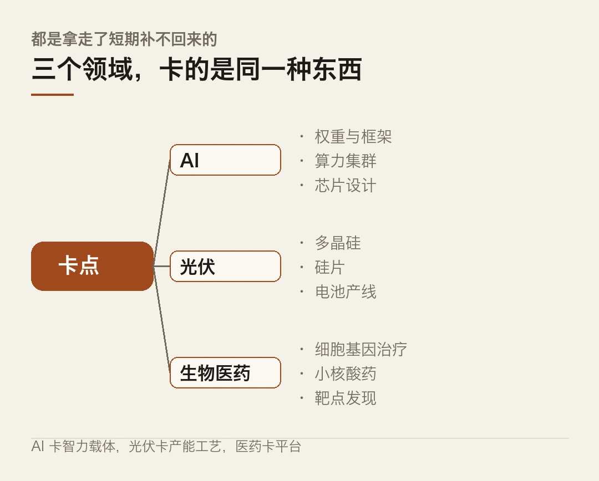
一张目录，三个领域，同一条逻辑。技术可以出海，但核心的东西，出境前要留个底。这就是这份公告的全部。
本文信息来源
- 光明网（光明日报） — 《中国禁止出口限制出口技术目录》将修订，两部门公开征求意见（2026-10-17） · news.gmw.cn
- 中工网（新华社） — 商务部详解修订《中国禁止出口限制出口技术目录》（2026-10-17） · workercn.cn
- 中国证券网（上海证券报） — 三大领域 40 项关键技术拟纳入出口管理（2026-10-17） · cnstock.com
- 求是网 — 商务部 科技部公告 2026 年第 48 号全文（2026-10-17） · qstheory.cn
- 腾讯新闻 — 商务部、科技部拟修订《中国禁止出口限制出口技术目录》（2026-10-17） · news.qq.com
- AI Daily — China Built an Export Wall for Its AI. This One Faces Outward（2026-10-18） · unnn.org
02测电子自旋，非得用磁铁吗？有人把磁铁请出了场
《自然》杂志 10 月 13 日上线了一篇中国论文，标题很长，叫《Atomic-scale spin sensing of a 2D d-wave altermagnet via helical tunneling》。
翻译过来，用一根螺旋隧穿的针，给交错磁体的自旋做原子尺度成像。
中国科学技术大学陈仙辉、王震宇团队，联合本校向斌和香港科技大学刘军伟，把拓扑材料做成了一根显微镜针尖。
听起来像一次工艺改进。但读懂它，得先回到一个被整个领域默认了四十年的前提。
测自旋，是不是非用磁铁不可？
- 电子有电荷和自旋两个属性。电荷撑起了电脑手机，自旋是信息时代后半场的主角。
- 扫描隧道显微镜能看清原子在哪，却看不出自旋朝哪。传统办法是把针尖做成磁性的，可磁铁本身会干扰样品。
- 中科大的办法，是用拓扑材料的螺旋边界态，把「自旋方向」和「运动方向」锁死。测方向，就等于测自旋。
真正改写格局的从来不是某个孤立新发现，是工具和方法的跃迁。这次先抬头换方向的，是中国科学家。
一、电子有两张身份证
先补一点中学物理。
电子有两个基本属性。一个是电荷，一个是自旋。
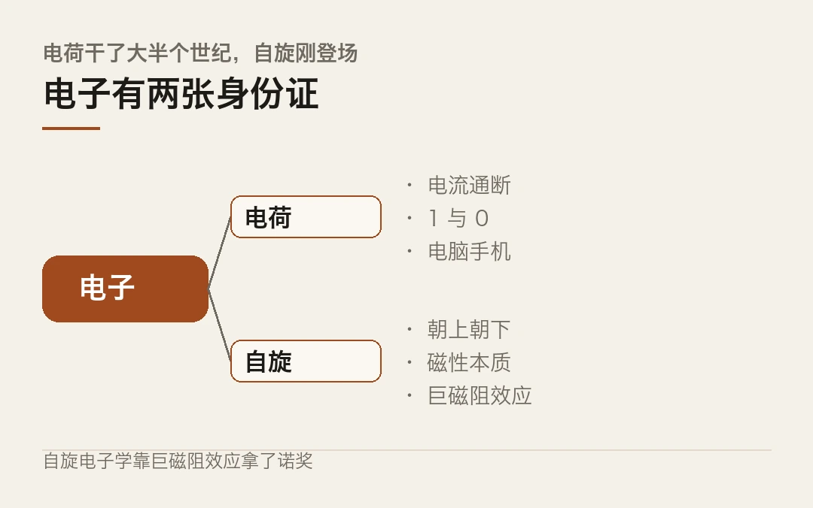
电荷这件事，人类用了大半个世纪。电流通断代表 1 和 0，撑起了计算机和手机。自旋你可以理解成电子自带的一根小磁针，只有朝上、朝下两档。材料的磁性，本质上就是亿万根小磁针怎么排。
自旋长期没派上用场。直到上世纪八十年代末，巨磁阻效应被发现，靠操控自旋，硬盘容量实现了数量级的跃升。两位发现者因此拿了诺贝尔奖，自旋电子学这门学科就此登场。
今天手机里的存储、硬盘里的读写头，背后都是自旋在干活。
但有个尴尬一直没解决。要用自旋，前提是先看见它。看不见的东西，谈不上操控。麻烦就在这。
人类看原子最厉害的设备，叫扫描隧道显微镜，简称 STM。
它厉害在哪？针尖细到一个原子，靠量子隧穿效应，能摸出表面的原子长什么样。1981 年在 IBM 诞生，五年后就拿了诺贝尔奖。
但 STM 有个短板。它看得清原子站在哪，却看不出电子的自旋朝哪。
传统办法很直接，把针尖也做成磁性的。带着磁场凑过去，自旋朝上的电子和朝下的电子，出来的信号不一样，就分出来了。
问题恰恰出在这块磁铁上。你是去测磁性的，自己却先顶着磁铁上场。样品还没测，先被你的磁场干扰了一遍。这不就是自相矛盾吗？
打个比方，想看一个人睡着没，结果先把他摇醒了。
磁性针尖又难做、又难重复。全世界在这个方向上卷了几十年，却很少有人回头问一句，这条路是不是只能这么走。
三、拓扑材料把答案锁死了
中科大团队的厉害，就在于问了个更根本的问题。
测自旋，非得用磁铁吗？
他们把目光投向了量子自旋霍尔绝缘体，一类拓扑材料。这是近二十年物理学界最耀眼的材料之一。它的特点是体内绝缘，边缘却藏着一条天然通道。
这条通道有条「死规矩」。沿着同一条边界，往相反方向跑的电子，携带的自旋也相反。方向和自旋被物理规律锁死，行话叫螺旋边界态。
这一下，问题的解法完全变了。等于把「测自旋」这道题，换成了「测方向」这道更简单的题。
你压根不用直接测自旋。只要控制电子往哪个方向跑，自旋朝哪的答案自己就跳出来了。那块惹祸的磁铁，从原理上被请出了场。听着有点玄，其实就一层窗户纸。
具体怎么做，一句半讲不清，但思路可以摊开看。
```bash
# 螺旋边界态做自旋探测的思路（示意，不是代码）
# 沿同一边界反向传播的电子，自旋相反
# 向右跑 → 自旋朝上
# 向左跑 → 自旋朝下
# 于是：控制偏压极性 = 控制电子跑向 = 选择自旋
# 传统磁性针尖靠「磁」选自旋，这根针靠「方向」选自旋```
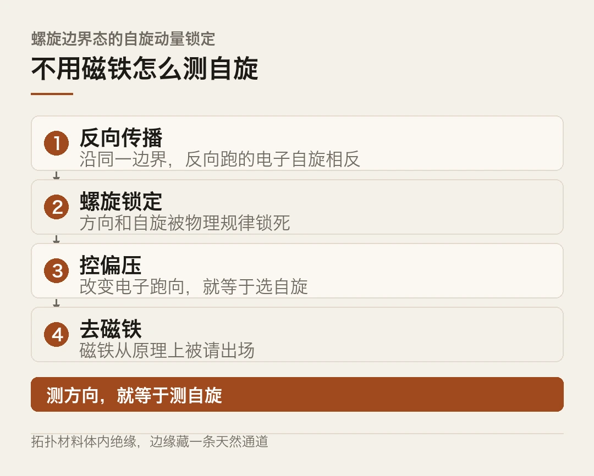
这不是一拍脑袋的灵光，是一盘下了很久的棋。
早先，团队就在 α-Bi4I4 晶体的单层和双层台阶处，观测到稳定纯净的一维螺旋边界通道。这一回，他们换用同族的 α-Bi4Br4 单晶，靠聚焦离子束微纳加工，削成原子分辨的针尖。
为验证它真能选自旋，团队先拿两块已知磁序的材料试了试。一块是 Fe1+xTe 里的双共线反铁磁条纹，一块是笼目磁体 FeGe 里的层间反铁磁序。条纹对比随偏压极性反转，层间对比随磁场诱导的自旋重取向变化。全都对得上。
这根不带磁性的针，真能分出自旋。
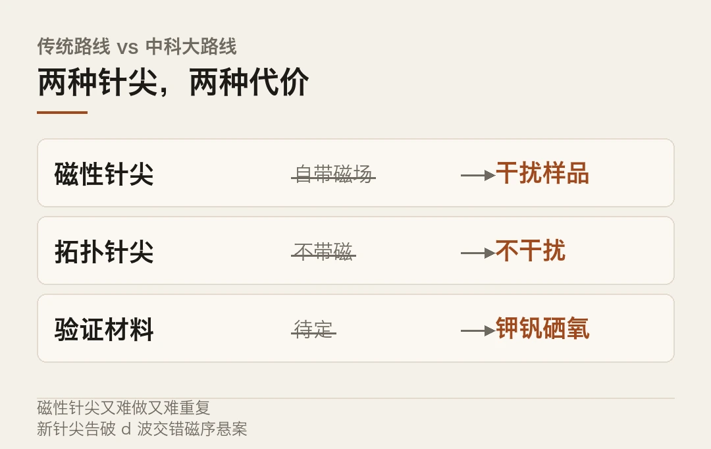
四、一根针，告破一桩悬案
有了新工具，就得拿真问题来考它。
考验对象叫钾钒硒氧，化学式 KV2Se2O。这是学界关注多年的交错磁体候选材料。它表面到底有没有二维 d 波交错磁序，此前一直有争议。
交错磁体这东西有点怪。它的净磁化为零，看着像反铁磁体，但交换作用能让能带产生强自旋劈裂，而且自旋极化随动量方向交替变化。这种「无磁却自旋极化」的特性，让它成了自旋电子学里一个热门候选。
问题是，它太难直接观测。净磁化为零，意味着传统磁性测量手段使不上劲。麻烦就在这。
新针尖扫上去，结合理论分析和对比实验，证据指向同一个结论，表面层确实存在二维 d 波交错磁序。
悬案告破。
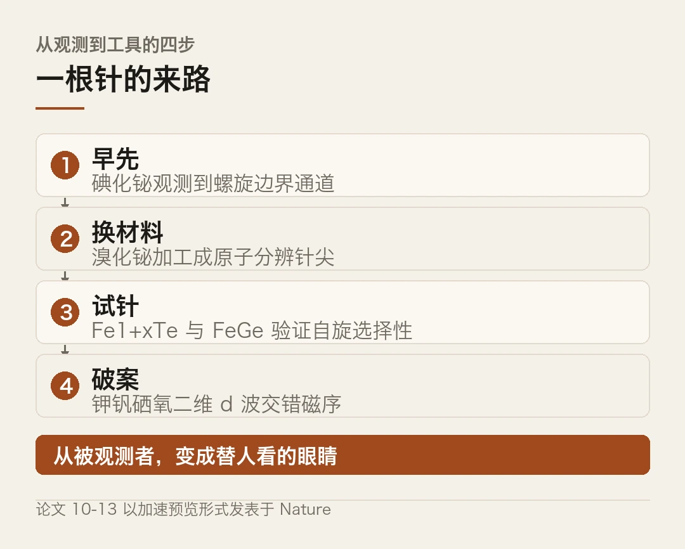
到这里，真正的转折才浮出来。
过去十几年，拓扑材料一直是全世界物理学家排队围观的明星。从拓扑绝缘体的理论预言，到 2013 年薛其坤院士团队首次发现量子反常霍尔效应，中国科学家一直坐在主位上。
但它始终是被研究的角色，是台下的演员。
这一次，它在中科大手里翻了个身。从被观察者，变成替人类看别的材料的眼睛。
这个身份的转换，才是这篇论文真正值钱的地方。
说说这件事的分量，我把话讲实在点。
第一，它解决的是一个「测量手段」问题，不是「多发现一种材料」问题。前者是乘法，后者是加法。一套新探针，后面会跟着一串本来没法做、现在能做的实验。
第二，它绕开的是磁性针尖这条走了四十年的老路。别人都在把磁铁做得更细、更稳、更不干扰，中科大直接问「能不能不要磁铁」。这种「换赛道」的思路，比「优化赛道」稀缺得多。
第三，它验证了拓扑材料除了被研究，还能当工具用。这个认知一旦打开，拓扑材料就从一个「研究对象」，变成了一个「工具箱」。我关注的就是这一点，因为它比单篇论文更值钱。
陈仙辉自己说得更直接。这项工作的意义，是展示拓扑边界态不仅可以被观测，还可以拿来探测别的材料的自旋相关电子态。
当然，话说回来，这还只是实验室里的一根针。从能分出自旋，到能在更多材料、更多温度、更多环境下稳定工作，中间还有不少路要走。
但科学史上真正改写格局的，往往正是这种工具层面的跃迁，而不是某个孤立的发现。
想想看，STM 自己当年，不也是一根针吗？它开启的，是整个表面科学。
本文信息来源
- 中国科学技术大学物理学院 — 陈仙辉、王震宇团队利用拓扑探针首次实现交错磁体原子尺度自旋成像（2026-10-13） · physics.ustc.edu.cn
- 中国科学技术大学新闻网（新华网） — 中国科研团队找到原子尺度自旋探测的新方法（2026-10-14） · news.ustc.edu.cn
- 央广网（人民日报） — 我科研团队实现交错磁体原子尺度自旋成像（2026-10-17） · cnr.cn
- 中国科学技术大学微纳研究与制造中心 — 拓扑探针制备工艺（2026-10-16） · nano.ustc.edu.cn
- 腾讯新闻 — 重大突破！中科大又干了一件大事，一根特殊针尖掀翻全球赛道（2026-10-18） · news.qq.com
- Nature — Atomic-scale spin sensing of a 2D d-wave altermagnet via helical tunneling（2026-10-13） · nature.com
03你给 Agent 挂的每个插件，都是一串现成的权限
一份针对官方 MCP 注册表的静态扫描，最近放出了结果。
扫描对象 15341 个组件，结论用一句话能概括。
给一个 AI Agent 挂上一个 MCP 服务器，等于把那个服务器能做的事，原样交到 Agent 手上。包括联网、读文件、开 shell，还有，在安装那一刻就跑代码。
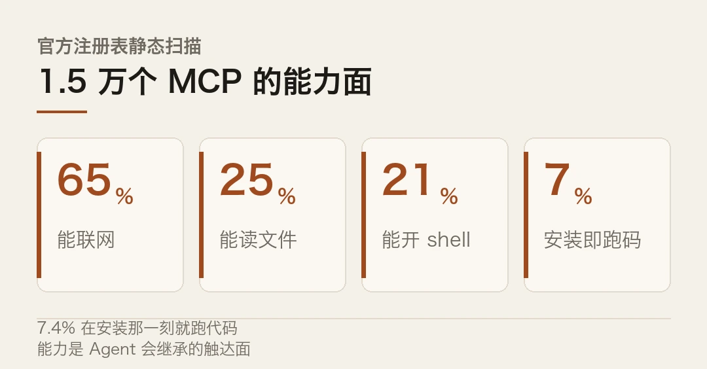
一、能力本身，就是触达面
先说清楚这份报告的性质。它的用意，恰恰是给「MCP 不安全」这种笼统的恐慌泼冷水。
扫描器 SkillTotal 是 Apache-2.0 开源的，方法是纯静态分析，正则加 Python AST，代码只下载阅读、从不执行。它自己还搭了 125 个攻击样本加 89 个良性样本的基准，确认规则集能命中、无误报。
所以数字是硬的。真正值得琢磨的，是这些数字背后那句更冷的话。注意一点，它比数字本身更值钱。
作者的原话是，「能力不算漏洞，算 Agent 会继承的触达面」。
64.8% 的组件能联网，25.0% 能读文件，21.1% 能开 shell，20.9% 能写文件。这些画的是「正常组件」的像，跟「恶意组件」沾不上边。
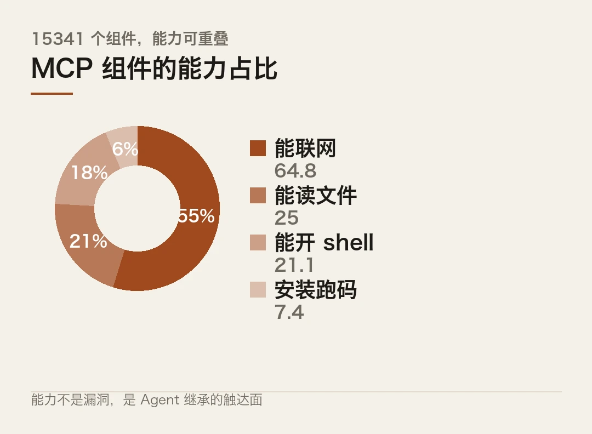
一个 MCP 要帮你查数据库，就得能联网。要帮你读本地文档，就得能读文件。要帮你跑命令，就得能开 shell。
能力，本来就是 Agent 存在的理由。这话听着有点绕，其实挺简单。
问题在于，这些能力一旦挂上去，就默认「可信」了。而信任的来源，往往只是一个名字，或者一个 star 数。这比裸奔还危险，因为你会带着放心去裸奔。
二、那个被顶掉的仓库
报告里有个具体的事故，值得单独讲。
REA，一个让 coding agent 逆向二进制、Electron 应用、APK 的开源 MCP 服务器，走红几天内拿到了约 14.5 万 star。
10 月 13 日，有人举报了一个假冒仓库，rea-tools/rea。
手法不新鲜。复制 REA 的 README，加一节「Windows Standalone .exe」，指向一个 82.6 MB 的压缩包。组织名 rea-tools 是 10 月 10 日才创建的，名下只有这一个仓库，专门模仿 REA 的真实站点 rea.tools。
那节「免安装版」，专门收割不想配环境的小白用户。这招狠在哪？它收割的是「想省事」的人。
解压出来的 rea-x64.exe，微软 Defender 标成 Trojan，VirusTotal 上 8/45 个引擎报毒。
传播量，172 次下载。
这个数字单独看不大。但放大看，它戳破了一个假设。
很多人的判断是，VirusTotal 没大面积报毒，就是安全的。这个案例里，45 个引擎只有 8 个报。传统引擎对这类新样本覆盖不足，不能当安全依据。
还有一层更隐蔽的。这类假冒仓库模仿的是「热门项目」，借的是别人已经攒下的信任。你搜到的、抄下的那行 npx，可能早就指向一个原作者已经管不了的东西。
报告给了一组佐证。9.3% 的组件，指向的仓库或包已经消失或变成私有了。
假冒的还没造成大祸，是因为 172 这个数字还小。但传播的路径是通的，手法是可复制的，缺的只是时间。
三、安装那一刻，就是最危险的那一刻
传统依赖安全有个基本假设，装上、运行，才有风险。
MCP 把这个假设打穿了。
7.4%，也就是 1134 个组件，在安装阶段就会运行代码。这段代码跑起来的时候，你还没调用任何工具，还没读任何工具描述。
也就是说，风险前置到了「你 npx 那一刻」。这就麻烦了。
而且因为 MCP 是给 Agent 用的，出事时的操作主体是你的 Agent，权限是你机器的凭据。追责链条比普通依赖更模糊。等发现异常，操作可能已经在无人值守时完成了。
这份报告最刺眼的，其实不是这 7.4%，而是一个更隐蔽的机制。
报告提到，Claude Code 在命令行模式、Agent SDK 和云运行里，会不询问就加载项目级的 .mcp.json。
这意味着什么？PR 里有人改一行 .mcp.json，下一次任务启动，那段配置就会被执行。项目级配置成了一个静默的注入点。
把这条和「7.4% 安装时跑代码」连起来看，风险链就完整了。
一个可信仓库的 PR，一行配置改动，一次无人值守的任务启动，一串新权限。
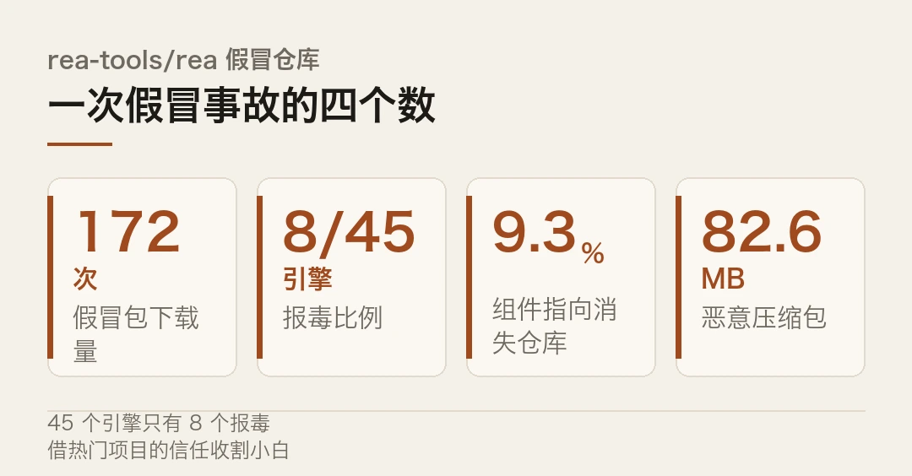
四、把话说回来
这份报告没让你戒掉 MCP，它要的，是别再用「凭感觉」的方式接它。
它自己给了一套落地清单，我挑几条真正可执行的。
第一，名字从项目自己的 README 或官网取，逐字符比对，别从搜索结果里直接抄。
第二，查仓库的创建时间和归属。新近创建的单仓库组织，是假冒仓库的高发特征。
第三，锁死版本号，别用 @latest。把 min-release-age 设成 7 天，让新发布的包先「晾一晾」。
第四，在安装脚本运行之前，先读它。npm 12 默认跳过依赖安装脚本，更早的版本要显式加 --ignore-scripts。
第五，把「能联网、能开 shell、能写盘、安装期执行」当成审批字段，而不是让工程师凭感觉判断。
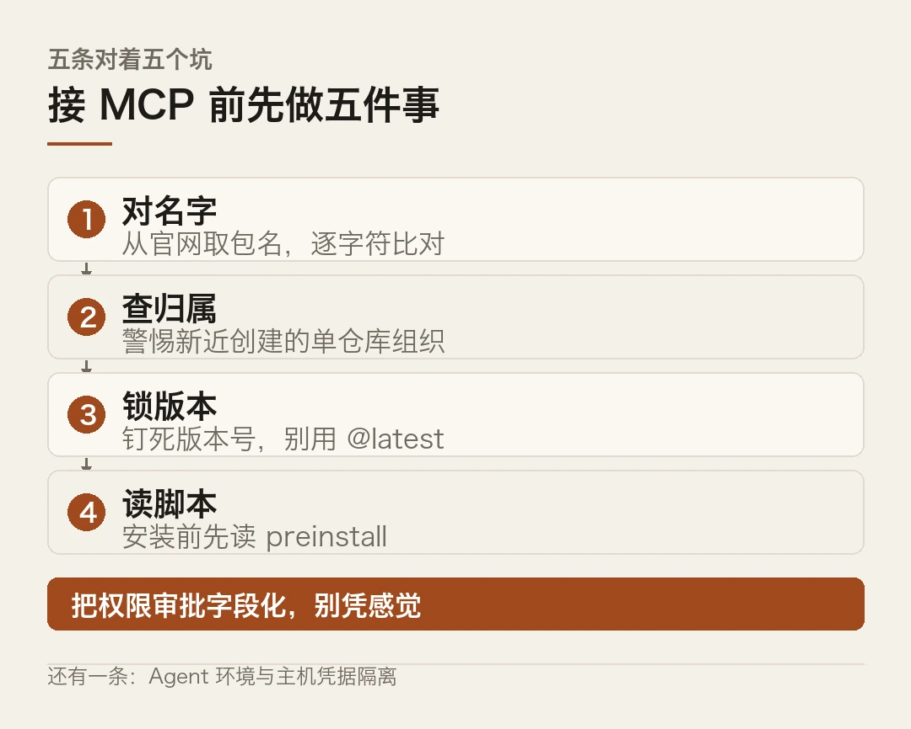
这五条，成本都不高，但每一条都对着一个具体的坑。
真正要改变的是心态。MCP 现在正处在「什么都敢挂」的早期，它的安全水位，还没跟上它膨胀的速度。
一个每天要接几十个插件的 Agent，如果每个插件都默认可信，那 Agent 身上挂的，就不只是一串功能，是一串现成的权限。
而权限这个东西，不出事的时候是便利，出事的时候，就是别人替你做的决定。
本文信息来源
- 汇智网 — MCP 注册表 15,341 个服务器体检：64.8% 能联网、21.1% 能开 shell（2026-10-16） · hubwiz.com
- 网易（InfoQ） — OpenCode 2.0 稳定版发布（2026-10-17） · 163.com
- IT之家 — 华硕推出首款英特尔 Arc Pro B70 显卡（2026-10-17） · ithome.com
- SkillTotal — MCP registry supply chain audit（2026-10-16） · github.com
- 三亩地 — Bleeding Llama 漏洞深度剖析：Ollama CVE-2026-7482（2026-10） · mfbz.cn
- 网易 — 40 位 SHA 被同名分支顶掉，四个 AI 编程代理装错了代码（2026-10-17） · 163.com
04从出口清单到一张显卡，今天的新闻都在划边界
今天这批消息，单看各有各的事，凑在一起有一条暗线。
每个人都在划边界。有的划在法规里，有的划在跑分口径里，有的划在成本账里。
把边界和口径看清楚，比记住几条新闻本身值钱。这条暗线，串起了下面八条。
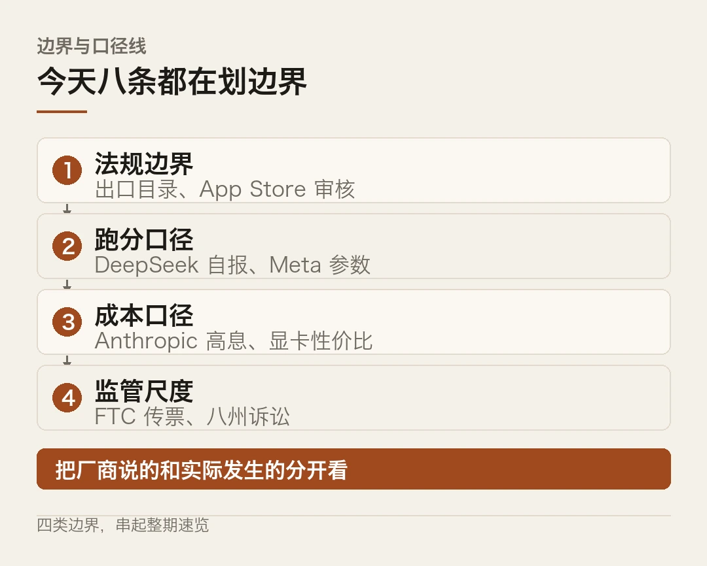
国内 · DeepSeek 新版本，跑分和成本的「双降」
10 月 17 日，DeepSeek 把 V4.1 Flash 升到了 V4.1-Flash-1017，网页、App、API 同步切换。
官方口径是，DeepSWE v1.1 通过率从 74.2% 升到 77.0%，Terminal-Bench 4.0 从 31.2 升到 42.3。同时任务平均费用从约 3.3 元降到约 1.3 元。参数量涨到了 763B。
看这条新闻，得守一个口径边界。这些跑分全是厂商自己给的，不是第三方独立评测，尤其「反超 GPT-6 Astra」这类说法，要等独立跑分出来才作数。你会信吗？反正我建议先打个折。
但有一个数字相对硬，成本降六成，同时 API 单价不变。这意味着降价来自「任务跑得更快、输出更短」，而不是「降价促销」。两者性质不一样，前者是工程进步，后者是市场策略。
海外 · Anthropic 融 600 亿美元买芯片，黑石要 10% 利息
Anthropic 正在推进一笔 600 亿美元的芯片融资，代号「北极星项目」，买约 1.5 吉瓦的谷歌 TPU。
结构分两层，约 420 亿优先债，博通做剩余价值担保；180 亿次级债，黑石认购其中 90 亿。
关键在价格。黑石拿到的次级债票息是 10%。四个月前，Anthropic 的「大天空」项目里，同类次级债利率是 8.5%。几个月，利率涨了 1.5 个点。
这里有个口径要守。Anthropic 刚披露 Q3 收入 168 亿美元，自称连续两个季度调整后盈利。一家「盈利」的头部 AI 公司，融资成本却在几个月内快速上行。
盈利是会计口径，融资成本是市场口径。两者没打架，但指向的方向不完全一致。市场在为 AI 的密集融资需求，重新定价风险。
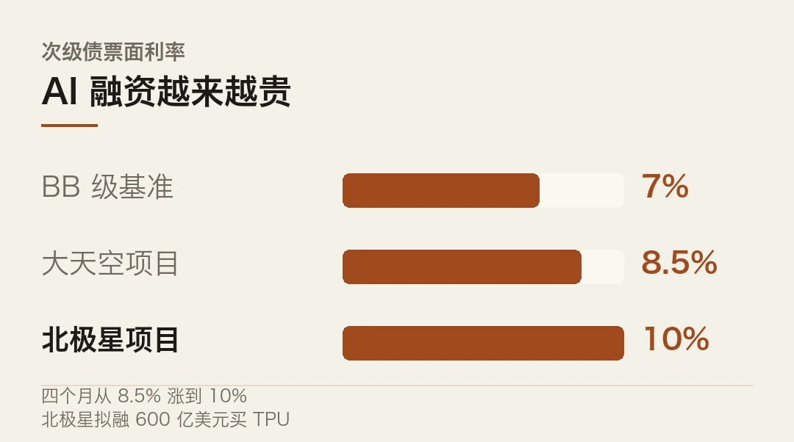
海外 · Meta 把 8160 亿参数模型放上了两台 Mac
Meta 开源了 Muse Spark Open，8160 亿总参数，420 亿激活参数，100 万 token 上下文。
真正的看点，是它专门为苹果 MLX 框架和 Apple Silicon 优化过。两台顶配 Mac Studio，拼出 1TB 统一内存，就能把整个模型跑起来。
这里也有个口径要守。8160 亿是「总参数」，420 亿是「激活参数」，真正每次计算参与的是后者。稀疏激活的设计，是它敢在消费级工作站上跑的前提。
「跑得动」和「跑得便宜」是两件事。但它确实给「本地跑大模型」提供了一个具体的硬件答案，卡点从显卡挪到了统一内存容量。这条边界，划得清楚。
海外 · FTC 给 OpenAI 和 Anthropic 发了传票
美国联邦贸易委员会，也就是 FTC，向 OpenAI 和 Anthropic 发出传票，调查 AI 模型的安全事件，聚焦潜在的消费者保护违规，要求提交安全事件文件和高管证词。
同期的另一条，至少八个州起诉 OpenAI，指控 ChatGPT 危害儿童、误导成年人。上期我写过这条，不展开。
这两条放在一起，边界很清楚。监管的手，已经从「事后罚款」伸到了「事前审查」。FTC 主席的话很直白，AI 系统在发布前就必须是安全的。
国内 · 华硕一张显卡，把门槛从「买卡」变成「算显存」
华硕发了 Arc Pro B70，32GB ECC 显存，INT8 算力 367 TOPS。
这张卡真正该看的，是它把「本地跑大模型」的门槛，从「买张游戏卡硬扛」换成了「按显存容量选配」。32GB 起步，四卡 128GB，70B 级 4bit 量化模型能在单卡常驻。
但算账要守三个口径。先说第一个，608GB/s 的带宽，只有同价位专业卡的六到七成，MoE、长上下文这类带宽敏感场景会卡。第二，单卡 310W，四卡 1240W，普通工位接不住。第三，1299 到 2000 美元的区间，正面撞上二手和上一代专业卡。
性价比的边界，不在「能不能跑」，在「跑的时候值不值」。这话得自己掂量。
海外 · 苹果收紧 App Store，专打 AI 深度伪造
苹果更新了 App Store 审核规则，要求应用防范 AI 生成的裸照和非自愿深度伪造内容，违规者下架。新规要求开发者加过滤机制和举报机制。
这是一条「事前闸门」式的规则，跟 FTC 的传票、跟 AI 出口管制目录，其实是同一个动作的不同尺度。一个在应用商店，一个在监管机构，一个在国境线。都在做同一件事，给 AI 的能力划出「哪些能用、哪些不能」的线。
国内 · 未来网络大会，给智能体修了一条「算网路」
第十届未来网络发展大会在南京开了，发布了智能体互联平台 AXP。官方口径，依托未来网络试验设施（CENI），能完成 4000 公里以上跨域高精度智能体寻址，端到端任务执行耗时降低 20% 以上。
这条的边界在「官方发布口径」。它是基础设施层面的进展，不是某个能立刻上手的应用，20% 的降幅是试验设施里的数据，离商业场景还有距离。
但它指的方向值得留意。智能体要真协同干活，光有模型不够，得有一条让它们互相找到、稳定通信的路。算网底座，是下一层的事。
海外 · 纳指单周跌 5.5%，半导体八连跌
最后补一条市场的。
纳指单周跌 5.5%，半导体板块八连跌，创 2008 年以来最长连跌。CoreWeave 信用恶化，引发市场对 AI 融资回报的重新审视。
这条和 Anthropic 的 10% 高息，是同一件事的两面。一面是 AI 公司还在拼命借钱扩张，一面是市场开始怀疑这些钱什么时候能回来。
回到开头那条暗线。
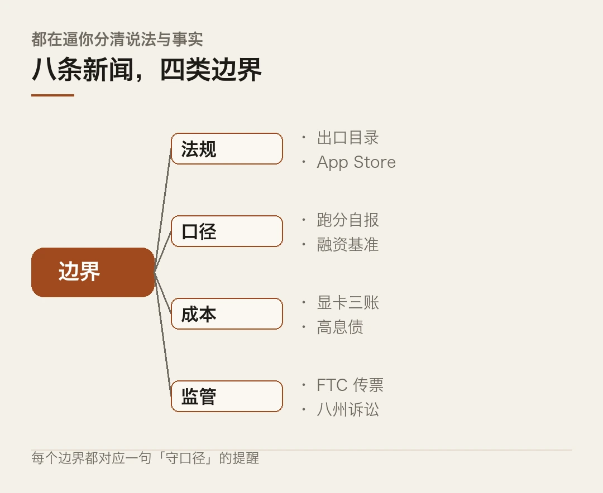
出口管制的边界、跑分的口径、融资成本的口径、显卡性价比的口径。今天这些新闻，每一件都在逼你停下来，把「厂商说的」和「实际发生的」分开看。
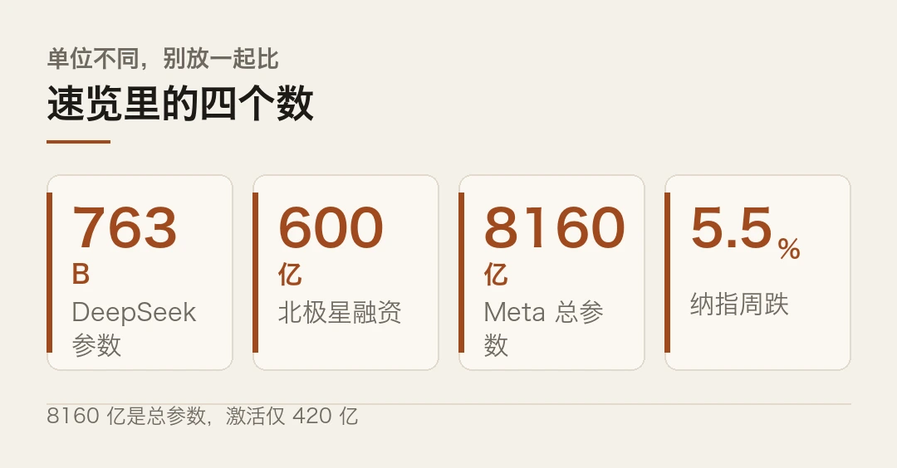
这个习惯，比任何一条新闻都值得留着。
本文信息来源
- 新浪科技 — DeepSeek V4.1F 新版本来了，主打「许愿式编程」（2026-10-17） · tech.sina.cn
- 财联社 — Anthropic 也要付 10% 高息，AI 债市怎么了？（2026-10-18） · 163.com
- 网易（像素与芯片） — 8160 亿参数塞进两台 Mac，Meta 把最强开放权重模型开源了（2026-10-17） · 163.com
- The Hindu BusinessLine — US states sue OpenAI, saying its chatbot is hurting children（2026-10-17） · thehindubusinessline.com
- IT之家 — 华硕推出首款英特尔 Arc Pro B70 显卡（2026-10-17） · ithome.com
- 光明网（光明日报） — 第十届未来网络发展大会发布三大成果（2026-10-18） · news.gmw.cn
- 陆家嘴财经早餐 — 纳指单周大跌 5.5%，半导体八连跌（2026-10-18） · sina.com.cn
- 你的 Trace — Everything that mattered in tech and AI today（2026-10-18） · yourtrace.online
本文首发于公众号「YITENG」。原文：daily.html
留言